<!DOCTYPE html
  PUBLIC "-//W3C//DTD HTML 4.01 Transitional//EN">

<html><html><body><div class="banner"><a href="../../../index.html"></a></div></body></html><head>
<meta content="text/html; charset=utf-8" http-equiv="Content-Type"/>
<!--
This HTML was auto-generated from MATLAB code.
To make changes, update the MATLAB code and republish this document.
      --><title>Non-Stationary Pipe Conveying Fluid</title><meta content="MATLAB 9.14" name="generator"/><link href="http://purl.org/dc/elements/1.1/" rel="schema.DC"/><meta content="2023-08-31" name="DC.date"/><meta content="Pipe_Conveying_Fluid_NonStationary.m" name="DC.source"/><style type="text/css">
html,body,div,span,applet,object,iframe,h1,h2,h3,h4,h5,h6,p,blockquote,pre,a,abbr,acronym,address,big,cite,code,del,dfn,em,font,img,ins,kbd,q,s,samp,small,strike,strong,tt,var,b,u,i,center,dl,dt,dd,ol,ul,li,fieldset,form,label,legend,table,caption,tbody,tfoot,thead,tr,th,td{margin:0;padding:0;border:0;outline:0;font-size:100%;vertical-align:baseline;background:transparent}body{line-height:1}ol,ul{list-style:none}blockquote,q{quotes:none}blockquote:before,blockquote:after,q:before,q:after{content:'';content:none}:focus{outine:0}ins{text-decoration:none}del{text-decoration:line-through}table{border-collapse:collapse;border-spacing:0}

html { min-height:100%; margin-bottom:1px; }
html body { height:100%; margin:0px; font-family:Arial, Helvetica, sans-serif; font-size:10px; color:#000; line-height:140%; background:#fff none; overflow-y:scroll; }
html body td { vertical-align:top; text-align:left; }

h1 { padding:0px; margin:0px 0px 25px; font-family:Arial, Helvetica, sans-serif; font-size:1.5em; color:#d55000; line-height:100%; font-weight:normal; }
h2 { padding:0px; margin:0px 0px 8px; font-family:Arial, Helvetica, sans-serif; font-size:1.2em; color:#000; font-weight:bold; line-height:140%; border-bottom:1px solid #d6d4d4; display:block; }
h3 { padding:0px; margin:0px 0px 5px; font-family:Arial, Helvetica, sans-serif; font-size:1.1em; color:#000; font-weight:bold; line-height:140%; }

a { color:#005fce; text-decoration:none; }
a:hover { color:#005fce; text-decoration:underline; }
a:visited { color:#004aa0; text-decoration:none; }

p { padding:0px; margin:0px 0px 20px; }
img { padding:0px; margin:0px 0px 20px; border:none; }
p img, pre img, tt img, li img, h1 img, h2 img { margin-bottom:0px; }

ul { padding:0px; margin:0px 0px 20px 23px; list-style:square; }
ul li { padding:0px; margin:0px 0px 7px 0px; }
ul li ul { padding:5px 0px 0px; margin:0px 0px 7px 23px; }
ul li ol li { list-style:decimal; }
ol { padding:0px; margin:0px 0px 20px 0px; list-style:decimal; }
ol li { padding:0px; margin:0px 0px 7px 23px; list-style-type:decimal; }
ol li ol { padding:5px 0px 0px; margin:0px 0px 7px 0px; }
ol li ol li { list-style-type:lower-alpha; }
ol li ul { padding-top:7px; }
ol li ul li { list-style:square; }

.content { font-size:1.2em; line-height:140%; padding: 20px; }

pre, code { font-size:12px; }
tt { font-size: 1.2em; }
pre { margin:0px 0px 20px; }
pre.codeinput { padding:10px; border:1px solid #d3d3d3; background:#f7f7f7; }
pre.codeoutput { padding:10px 11px; margin:0px 0px 20px; color:#4c4c4c; }
pre.error { color:red; }

@media print { pre.codeinput, pre.codeoutput { word-wrap:break-word; width:100%; } }

span.keyword { color:#0000FF }
span.comment { color:#228B22 }
span.string { color:#A020F0 }
span.untermstring { color:#B20000 }
span.syscmd { color:#B28C00 }
span.typesection { color:#A0522D }

.footer { width:auto; padding:10px 0px; margin:25px 0px 0px; border-top:1px dotted #878787; font-size:0.8em; line-height:140%; font-style:italic; color:#878787; text-align:left; float:none; }
.footer p { margin:0px; }
.footer a { color:#878787; }
.footer a:hover { color:#878787; text-decoration:underline; }
.footer a:visited { color:#878787; }

table th { padding:7px 5px; text-align:left; vertical-align:middle; border: 1px solid #d6d4d4; font-weight:bold; }
table td { padding:7px 5px; text-align:left; vertical-align:top; border:1px solid #d6d4d4; }


  </style></head><body><div class="content"><h1>Non-Stationary Pipe Conveying Fluid</h1><!--introduction--><!--/introduction--><h2>Contents</h2><div><ul><li><a href="#2">Example setup</a></li><li><a href="#3">Create dynamical system</a></li><li><a href="#8">Convergence of backbone curve</a></li><li><a href="#12">Transient response prediction</a></li><li><a href="#13">Forced response - periodic orbit</a></li></ul></div><p>In this demo, we set the flow velocity to be 6, where the pipe system is under flutter. We construct a 2D unstable SSM around the unstable straight configuration. We expect there exists a stable limit cycle on the SSM. Under the addition of base harmonic excitation, the stable limit cycle is perturbed as stable torus. We are interested in the persistence of the torus under the change of excitation frquency and amplitude. More details can be found in [1]</p><p>[1] M. Li, H. Yan, L. Wang: Nonlinear model reduction for a cantilevered pipe conveying fluid: A system with asymmetric damping and stiffness matrices. MSSP. 2023. <a href="https://doi.org/10.1016/j.ymssp.2022.109993">https://doi.org/10.1016/j.ymssp.2022.109993</a></p><pre class="codeinput">clearvars
close <span class="string">all</span>
</pre><h2 id="2">Example setup</h2><p>The -degree of freedom dynamical system is of the form</p><p>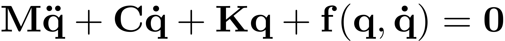</p><p>where 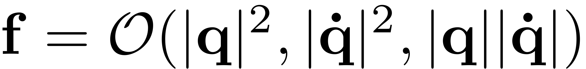 represents the nonlinearities and , , and 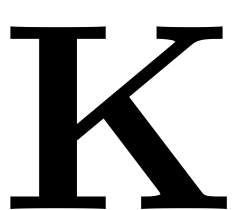 are the 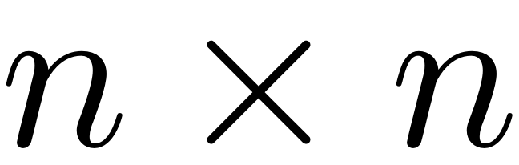 mass, stiffness, and damping matrices, respectively.</p><p>We rewrite the system in first-order form as</p><p>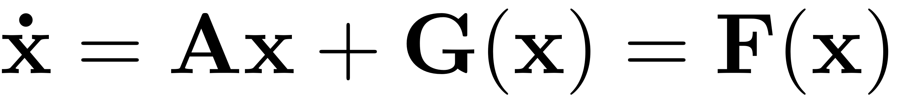</p><p>with</p><p>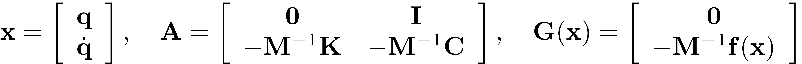.</p><pre class="codeinput">clear <span class="string">all</span>;
nmodes = 4;
fcload = 1;
flowspeed = 6;
miu = 0;
Gamma=0;
alpha=0.001;
beta=0.2;
[M, C, K, fnl, fext] = build_model(nmodes,flowspeed,beta,miu,Gamma,alpha,<span class="string">'clamped-free'</span>,<span class="string">'nonlinear_damp'</span>);
n = size(M,1);    <span class="comment">% mechanical dofs (axial def, transverse def, angle)</span>
[F, lambda] = functionFromTensors(M, C, K, fnl);
lambda = sort(lambda);
</pre><pre class="codeoutput">Getting linear and nonlinearity coefficients
Loaded coefficients from storage
</pre><h2 id="3">Create dynamical system</h2><pre class="codeinput">DS = <a href="../../../Library/DynamicalSystem/DynamicalSystem.html">DynamicalSystem</a>();
set(DS,<span class="string">'M'</span>,M,<span class="string">'C'</span>,C,<span class="string">'K'</span>,K,<span class="string">'fnl'</span>,fnl);
set(DS.<a href="../../../Library/Features/Options/Options.html">Options</a>,<span class="string">'Emax'</span>,10,<span class="string">'Nmax'</span>,10,<span class="string">'notation'</span>,<span class="string">'multiindex'</span>)
set(DS.<a href="../../../Library/Features/Options/Options.html">Options</a>,<span class="string">'RayleighDamping'</span>,false)
[V,D,W] = DS.<a href="../../../Library/DynamicalSystem/linear_spectral_analysis.html">linear_spectral_analysis</a>();
</pre><pre class="codeoutput">
 The first 8 nonzero eigenvalues are given as 
   1.0e+02 *

   0.0076 + 0.1353i
   0.0076 - 0.1353i
  -0.0704 + 0.4747i
  -0.0704 - 0.4747i
  -0.1225 + 0.0190i
  -0.1225 - 0.0190i
  -0.1240 + 1.0973i
  -0.1240 - 1.0973i

</pre><p><b>Choose Master subspace</b> (perform resonance analysis)</p><p>We take the pair of unstable modes as the master subspace and compute the corresponding 2D unstable SSM</p><pre class="codeinput">S = SSM(DS);
set(S.<a href="../../../Library/Features/Options/Options.html">Options</a>, <span class="string">'reltol'</span>, 1,<span class="string">'notation'</span>,<span class="string">'multiindex'</span>);
order = 9;
resonant_modes = [1,2];
S.<a href="../../../Library/Manifold/choose_E.html">choose_E</a>(resonant_modes);
[W0,R0] = S.<a href="../../../Library/Manifold/compute_whisker.html">compute_whisker</a>(order);
</pre><pre class="codeoutput">sigma_out = -16
sigma_in = -16
Manifold computation time at order 2 = 00:00:00
Estimated memory usage at order  2 = 2.29E-02 MB
Manifold computation time at order 3 = 00:00:00
Estimated memory usage at order  3 = 2.53E-02 MB
Manifold computation time at order 4 = 00:00:00
Estimated memory usage at order  4 = 2.94E-02 MB
Manifold computation time at order 5 = 00:00:00
Estimated memory usage at order  5 = 3.46E-02 MB
Manifold computation time at order 6 = 00:00:00
Estimated memory usage at order  6 = 4.16E-02 MB
Manifold computation time at order 7 = 00:00:00
Estimated memory usage at order  7 = 5.05E-02 MB
Manifold computation time at order 8 = 00:00:00
Estimated memory usage at order  8 = 6.16E-02 MB
Manifold computation time at order 9 = 00:00:00
Estimated memory usage at order  9 = 7.52E-02 MB
</pre><p><b>Reduced dynamics in symbolic form</b></p><pre class="codeinput">lamdMaster = DS.spectrum.Lambda(resonant_modes);
options = struct();
options.isauto = true;
options.isdamped = true;
options.numDigits = 4;
y = <a href="../../../Library/Features/misc/reduced_dynamics_symbolic.html">reduced_dynamics_symbolic</a>(lamdMaster,R0,options)
</pre><pre class="codeoutput"> 
y =
 
0.009578*rho_1^9 + 0.00558*rho_1^7 - 0.05442*rho_1^5 - 1.006*rho_1^3 + 0.7631*rho_1
         0.009245*rho_1^8 + 0.047*rho_1^6 + 0.1781*rho_1^4 + 0.5574*rho_1^2 + 13.53
 
</pre><p>Prediction of the emergence of isola</p><pre class="codeinput"><a href="../../../Library/Features/misc/plot_analytical_domain.html">plot_analytical_domain</a>(order,R0)
xlim([0.84 0.88]); ylim([-0.01 0.01])
</pre>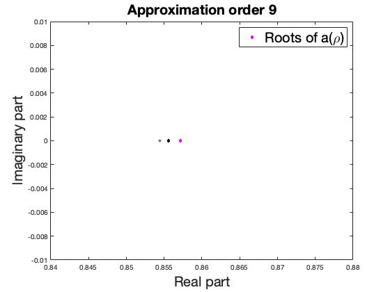 <p>we indeed see a converged root, which indicates that the system has isola under the addition of forcing. In addition, cubic approximation presents analytical prediction of the critical value of forcing amplitude for the merging of main and isola branches.</p><pre class="codeinput">lamdM = lamdMaster(1);
gamma1 = R0(3).coeffs(1,2);
arho = sqrt(4*real(lamdM)^3/27/abs(real(gamma1)));
brho = imag(lamdM)+imag(gamma1)*real(lamdM)/3/abs(real(gamma1));
f = abs(W(1:n,1)'*fext*0.5);
epsc = arho/brho^2/f
</pre><pre class="codeoutput">
epsc =

    0.0043

</pre><h2 id="8">Convergence of backbone curve</h2><pre class="codeinput">syms <span class="string">rho_1</span> <span class="string">positive</span>
[coeffs,powers]=coeffs(y(2));
tmp = simplify(log(powers));
exp_idx = double(tmp./log(rho_1));
</pre><pre class="codeinput">rhosamp = 0:0.01:1.0;
orders = [3 5 7 9];
<a href="../../../Library/Features/misc/plot_backbone_curves.html">plot_backbone_curves</a>(double(coeffs),exp_idx,rhosamp,orders)
</pre>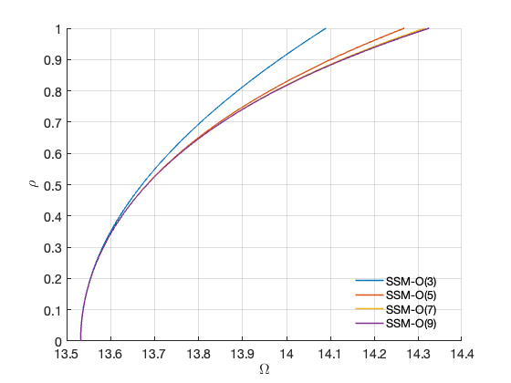 <pre class="codeinput">phiend = zeros(n,1);
lamda  = zeros(n,1);
lamda(1)=1.8751040687119611664453082410782141625701117335311;
lamda(2)=4.6940911329741745764363917780198120493898967375458;
lamda(3)=7.8547574382376125648610085827645704578485419292300;
lamda(4)=10.995540734875466990667349107854702939612972774652;
lamda(5)=14.137168391046470580917046812551772068603076792975;
lamda(6)=17.278759532088236333543928414375822085934519635550;
lamda(7)=20.420352251041250994415811947947837046137288894544;
lamda(8)=23.561944901806443501520253240198075517031265990051;
<span class="keyword">for</span> k=1:n
   x    = 1;
   phin = cos(lamda(k)*x)-cosh(lamda(k)*x)-(cos(lamda(k))+cosh(lamda(k)))/(sin(lamda(k))+sinh(lamda(k)))*<span class="keyword">...</span>
        (sin(lamda(k)*x)-sinh(lamda(k)*x));<span class="comment">%clamped-free</span>
   phiend(k) = phin;
<span class="keyword">end</span>
<span class="comment">% disp at the free end</span>
obsfun = @(x,mapx,nmodes) mapx*x(1:nmodes,:);
obs = @(x) obsfun(x,phiend',n);
</pre><pre>backbone curve in physical coordiantes</pre><pre class="codeinput">set(S.<a href="../../../Library/Features/Options/Options.html">FRCOptions</a>, <span class="string">'outdof'</span>,obs);
rhomax = 1;
freqrange = [0.94 1.15]*imag(D(1));
BB = S.<a href="../../../Library/Features/Wrappers/cocoWrapper/extract_backbone.html">extract_backbone</a>(resonant_modes, freqrange, [3 5 7 9],rhomax);
</pre><pre class="codeoutput">sigma_out = -16
sigma_in = -16
Manifold computation time at order 2 = 00:00:00
Estimated memory usage at order  2 = 1.97E-02 MB
Manifold computation time at order 3 = 00:00:00
Estimated memory usage at order  3 = 2.22E-02 MB
gamma = 
  -1.0056 + 0.5574i

Manifold computation time at order 2 = 00:00:00
Estimated memory usage at order  2 = 2.07E-02 MB
Manifold computation time at order 3 = 00:00:00
Estimated memory usage at order  3 = 2.31E-02 MB
Manifold computation time at order 4 = 00:00:00
Estimated memory usage at order  4 = 2.72E-02 MB
Manifold computation time at order 5 = 00:00:00
Estimated memory usage at order  5 = 3.24E-02 MB
gamma = 
  -1.0056 + 0.5574i
  -0.0544 + 0.1781i

Manifold computation time at order 2 = 00:00:00
Estimated memory usage at order  2 = 2.18E-02 MB
Manifold computation time at order 3 = 00:00:00
Estimated memory usage at order  3 = 2.42E-02 MB
Manifold computation time at order 4 = 00:00:00
Estimated memory usage at order  4 = 2.83E-02 MB
Manifold computation time at order 5 = 00:00:00
Estimated memory usage at order  5 = 3.35E-02 MB
Manifold computation time at order 6 = 00:00:00
Estimated memory usage at order  6 = 4.05E-02 MB
Manifold computation time at order 7 = 00:00:00
Estimated memory usage at order  7 = 4.94E-02 MB
gamma = 
  -1.0056 + 0.5574i
  -0.0544 + 0.1781i
   0.0056 + 0.0470i

Manifold computation time at order 2 = 00:00:00
Estimated memory usage at order  2 = 2.29E-02 MB
Manifold computation time at order 3 = 00:00:00
Estimated memory usage at order  3 = 2.53E-02 MB
Manifold computation time at order 4 = 00:00:00
Estimated memory usage at order  4 = 2.94E-02 MB
Manifold computation time at order 5 = 00:00:00
Estimated memory usage at order  5 = 3.46E-02 MB
Manifold computation time at order 6 = 00:00:00
Estimated memory usage at order  6 = 4.16E-02 MB
Manifold computation time at order 7 = 00:00:00
Estimated memory usage at order  7 = 5.05E-02 MB
Manifold computation time at order 8 = 00:00:00
Estimated memory usage at order  8 = 6.16E-02 MB
Manifold computation time at order 9 = 00:00:00
Estimated memory usage at order  9 = 7.52E-02 MB
gamma = 
  -1.0056 + 0.5574i
  -0.0544 + 0.1781i
   0.0056 + 0.0470i
   0.0096 + 0.0092i

Total time spent on backbone curve computation = 00:00:03
</pre>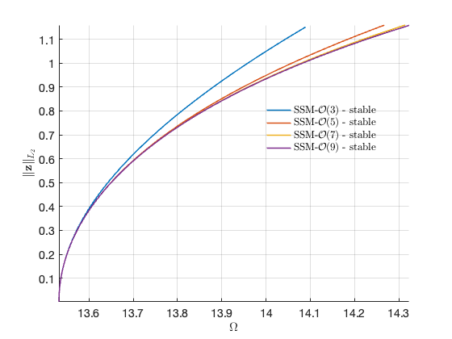  <h2 id="12">Transient response prediction</h2><pre class="codeinput">tf = 15;
nsteps = 3000;
z0    = 0.0*V(:,1); <span class="comment">% initial condition (here we select it based on the modal shapes)</span>
z0(1) = 0.001;
outdof = [1:n n+1];
traj = <a href="../../../Library/Features/misc/transient_traj_on_auto_ssm.html">transient_traj_on_auto_ssm</a>(DS, resonant_modes, W0, R0, tf, nsteps, outdof, z0);
[tInt,zInt] = <a href="../../../Library/Features/Wrappers/time_integration_transient.html">time_integration_transient</a>(DS,0,<span class="keyword">...</span>
    <span class="string">'nSteps'</span>, nsteps, <span class="string">'nCycles'</span>, ceil(tf/2/pi), <span class="keyword">...</span>
    <span class="string">'integrationMethod'</span>,<span class="string">'ode45'</span>,<span class="string">'outdof'</span>,outdof,<span class="string">'init'</span>,z0);
figure;
plot(traj.time,traj.phy(:,1:n)*phiend,<span class="string">'r-'</span>,<span class="string">'LineWidth'</span>,1); hold <span class="string">on</span>
plot(tInt,zInt(:,1:n)*phiend,<span class="string">'b--'</span>,<span class="string">'LineWidth'</span>,1);
xlabel(<span class="string">'$\tau$'</span>,<span class="string">'Interpreter'</span>,<span class="string">"latex"</span>,<span class="string">'FontSize'</span>,14);
ylabel(<span class="string">'$w$'</span>,<span class="string">'Interpreter'</span>,<span class="string">"latex"</span>,<span class="string">'FontSize'</span>,14);
set(gca,<span class="string">'FontSize'</span>,14); grid <span class="string">on</span>
legend(<span class="string">'SSM'</span>,<span class="string">'Full'</span>)
xlim([0,min(traj.time(end),tInt(end))]);

rhosamp = [0:0.01:0.9];
plotdofs = [1 2 n+1];
<a href="../../../Library/Features/misc/plot_2D_auto_SSM.html">plot_2D_auto_SSM</a>(W0,rhosamp,outdof(plotdofs));
view([30 30])
hold <span class="string">on</span>
plot3(traj.phy(:,plotdofs(1)),traj.phy(:,plotdofs(2)),traj.phy(:,plotdofs(3)),<span class="string">'r-'</span>);
plot3(zInt(:,plotdofs(1)),zInt(:,plotdofs(2)),zInt(:,plotdofs(3)),<span class="string">'b--'</span>);
</pre>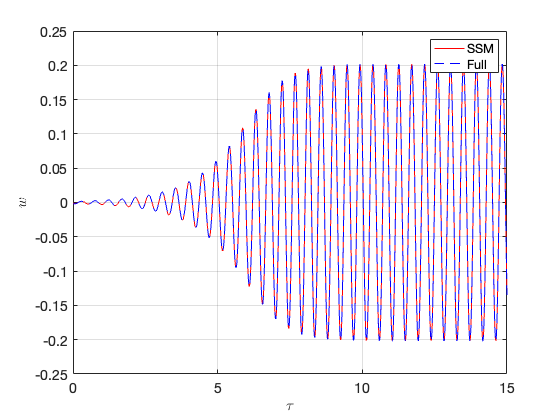 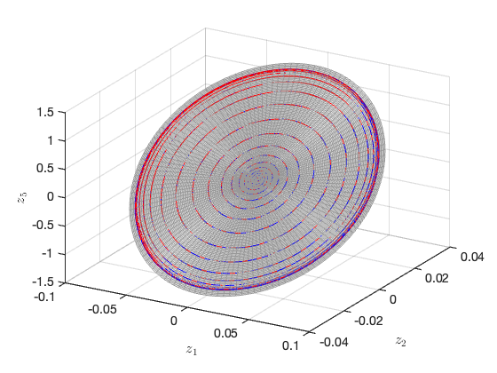 <h2 id="13">Forced response - periodic orbit</h2><pre class="codeinput"><span class="comment">% add Forcing</span>
kappas = [-1; 1];
coeffs = [fext fext]/2;
epsilon = 0.0045;
DS.<a href="../../../Library/DynamicalSystem/add_forcing.html">add_forcing</a>(coeffs, kappas, epsilon);
set(DS.<a href="../../../Library/Features/Options/Options.html">Options</a>,<span class="string">'BaseExcitation'</span>,true);
</pre><p>set up FRC options</p><pre class="codeinput">set(S.<a href="../../../Library/Features/Options/Options.html">FRCOptions</a>, <span class="string">'nCycle'</span>,500, <span class="string">'initialSolver'</span>, <span class="string">'fsolve'</span>);
set(S.contOptions, <span class="string">'PtMX'</span>, 300, <span class="string">'h_max'</span>, 0.1);
set(S.<a href="../../../Library/Features/Options/Options.html">FRCOptions</a>, <span class="string">'omegaSampStyle'</span>, <span class="string">'cocoBD'</span>);
set(S.<a href="../../../Library/Features/Options/Options.html">FRCOptions</a>, <span class="string">'outdof'</span>,obs,<span class="string">'method'</span>,<span class="string">'continuation ep'</span>,<span class="string">'p0'</span>,[]);
S.<a href="../../../Library/Features/Wrappers/cocoWrapper/extract_FRC.html">extract_FRC</a>(<span class="string">'freq'</span>,freqrange,[5,7,9]);
</pre><pre class="codeoutput">*****************************************
Calculating FRC using SSM with master subspace: [1  2]
sigma_out = -16
sigma_in = -16
Manifold computation time at order 2 = 00:00:00
Estimated memory usage at order  2 = 2.07E-02 MB
Manifold computation time at order 3 = 00:00:00
Estimated memory usage at order  3 = 2.31E-02 MB
Manifold computation time at order 4 = 00:00:00
Estimated memory usage at order  4 = 2.72E-02 MB
Manifold computation time at order 5 = 00:00:00
Estimated memory usage at order  5 = 3.24E-02 MB

Equation solved.

fsolve completed because the vector of function values is near zero
as measured by the value of the function tolerance, and
the problem appears regular as measured by the gradient.


 Run='freqSubint1.ep': Continue equilibria along primary branch.

    STEP   DAMPING               NORMS              COMPUTATION TIMES
  IT SIT     GAMMA     ||d||     ||f||     ||U||   F(x)  DF(x)  SOLVE
   0                          1.28e-15  2.33e+01    0.0    0.0    0.0

 STEP      TIME        ||U||  LABEL  TYPE            om         rho1          th1          eps
    0  00:00:00   2.3316e+01      1  EP      1.3532e+01   4.8867e-01   9.4058e+00   4.5000e-03
   10  00:00:00   2.3153e+01      2          1.3437e+01   4.2190e-01   9.3437e+00   4.5000e-03
   20  00:00:00   2.2204e+01      3          1.2915e+01   2.5094e-01   8.9242e+00   4.5000e-03
   24  00:00:00   2.1887e+01      4  EP      1.2720e+01   2.1111e-01   8.8130e+00   4.5000e-03

 STEP      TIME        ||U||  LABEL  TYPE            om         rho1          th1          eps
    0  00:00:01   2.3316e+01      5  EP      1.3532e+01   4.8867e-01   9.4058e+00   4.5000e-03
   10  00:00:01   2.3305e+01      6          1.3557e+01   5.4249e-01   9.3525e+00   4.5000e-03
   13  00:00:01   2.3261e+01      7  SN      1.3559e+01   5.6955e-01   9.2936e+00   4.5000e-03
   13  00:00:01   2.3261e+01      8  FP      1.3559e+01   5.6957e-01   9.2936e+00   4.5000e-03
   15  00:00:01   2.3145e+01      9  SN      1.3558e+01   6.2001e-01   9.1466e+00   4.5000e-03
   15  00:00:01   2.3145e+01     10  FP      1.3558e+01   6.2008e-01   9.1464e+00   4.5000e-03
   20  00:00:01   2.2900e+01     11          1.3575e+01   7.1295e-01   8.7979e+00   4.5000e-03
   30  00:00:01   2.2569e+01     12          1.3712e+01   8.5179e-01   8.1192e+00   4.5000e-03
   40  00:00:01   2.2392e+01     13          1.3936e+01   9.4516e-01   7.4553e+00   4.5000e-03
   50  00:00:01   2.2280e+01     14          1.4180e+01   9.9309e-01   6.7934e+00   4.5000e-03
   60  00:00:01   2.2131e+01     15          1.4371e+01   9.8977e-01   6.1134e+00   4.5000e-03
   69  00:00:01   2.1886e+01     16  SN      1.4435e+01   9.3818e-01   5.5017e+00   4.5000e-03
   69  00:00:01   2.1886e+01     17  FP      1.4435e+01   9.3818e-01   5.5017e+00   4.5000e-03
   70  00:00:01   2.1840e+01     18          1.4433e+01   9.2692e-01   5.4135e+00   4.5000e-03
   80  00:00:01   2.1365e+01     19          1.4326e+01   8.0684e-01   4.7268e+00   4.5000e-03
   90  00:00:01   2.0749e+01     20          1.4076e+01   6.4039e-01   4.0880e+00   4.5000e-03
  100  00:00:01   2.0407e+01     21          1.3909e+01   4.9511e-01   3.8119e+00   4.5000e-03
  102  00:00:02   2.0406e+01     22  SN      1.3908e+01   4.8717e-01   3.8130e+00   4.5000e-03
  102  00:00:02   2.0406e+01     23  FP      1.3908e+01   4.8717e-01   3.8130e+00   4.5000e-03
  110  00:00:02   2.0471e+01     24          1.3941e+01   4.3367e-01   3.8714e+00   4.5000e-03
  120  00:00:02   2.1228e+01     25          1.4390e+01   2.8054e-01   4.2631e+00   4.5000e-03
  130  00:00:02   2.2214e+01     26          1.5045e+01   1.9651e-01   4.5102e+00   4.5000e-03
  138  00:00:02   2.2955e+01     27  EP      1.5562e+01   1.6244e-01   4.6119e+00   4.5000e-03
*****************************************
Calculating FRC using SSM with master subspace: [1  2]
sigma_out = -16
sigma_in = -16
Manifold computation time at order 2 = 00:00:00
Estimated memory usage at order  2 = 2.18E-02 MB
Manifold computation time at order 3 = 00:00:00
Estimated memory usage at order  3 = 2.42E-02 MB
Manifold computation time at order 4 = 00:00:00
Estimated memory usage at order  4 = 2.83E-02 MB
Manifold computation time at order 5 = 00:00:00
Estimated memory usage at order  5 = 3.35E-02 MB
Manifold computation time at order 6 = 00:00:00
Estimated memory usage at order  6 = 4.05E-02 MB
Manifold computation time at order 7 = 00:00:00
Estimated memory usage at order  7 = 4.94E-02 MB

Equation solved.

fsolve completed because the vector of function values is near zero
as measured by the value of the function tolerance, and
the problem appears regular as measured by the gradient.


 Run='freqSubint1.ep': Continue equilibria along primary branch.

    STEP   DAMPING               NORMS              COMPUTATION TIMES
  IT SIT     GAMMA     ||d||     ||f||     ||U||   F(x)  DF(x)  SOLVE
   0                          1.02e-10  1.97e+01    0.0    0.0    0.0

 STEP      TIME        ||U||  LABEL  TYPE            om         rho1          th1          eps
    0  00:00:00   1.9652e+01      1  EP      1.3532e+01   4.8787e-01   3.1229e+00   4.5000e-03
   10  00:00:00   1.9490e+01      2          1.3432e+01   4.1949e-01   3.0563e+00   4.5000e-03
   20  00:00:00   1.8631e+01      3          1.2906e+01   2.4875e-01   2.6349e+00   4.5000e-03
   24  00:00:00   1.8344e+01      4  EP      1.2720e+01   2.1110e-01   2.5298e+00   4.5000e-03

 STEP      TIME        ||U||  LABEL  TYPE            om         rho1          th1          eps
    0  00:00:00   1.9652e+01      5  EP      1.3532e+01   4.8787e-01   3.1229e+00   4.5000e-03
   10  00:00:00   1.9675e+01      6          1.3558e+01   5.4127e-01   3.0718e+00   4.5000e-03
   14  00:00:00   1.9656e+01      7  SN      1.3560e+01   5.7676e-01   2.9926e+00   4.5000e-03
   14  00:00:00   1.9656e+01      8  FP      1.3560e+01   5.7699e-01   2.9919e+00   4.5000e-03
   15  00:00:00   1.9630e+01      9  SN      1.3560e+01   6.0784e-01   2.9031e+00   4.5000e-03
   15  00:00:00   1.9630e+01     10  FP      1.3560e+01   6.0786e-01   2.9030e+00   4.5000e-03
   20  00:00:00   1.9561e+01     11          1.3580e+01   7.0964e-01   2.5302e+00   4.5000e-03
   30  00:00:00   1.9625e+01     12          1.3726e+01   8.4985e-01   1.8538e+00   4.5000e-03
   40  00:00:00   1.9865e+01     13          1.3964e+01   9.4481e-01   1.1951e+00   4.5000e-03
   50  00:00:00   2.0175e+01     14          1.4221e+01   9.9502e-01   5.3826e-01   4.5000e-03
   60  00:00:00   2.0437e+01     15          1.4416e+01   9.9403e-01  -1.4036e-01   4.5000e-03
   69  00:00:00   2.0535e+01     16  FP      1.4473e+01   9.4981e-01  -7.0141e-01   4.5000e-03
   69  00:00:00   2.0535e+01     17  SN      1.4473e+01   9.4981e-01  -7.0141e-01   4.5000e-03
   70  00:00:01   2.0539e+01     18          1.4469e+01   9.3269e-01  -8.4089e-01   4.5000e-03
   80  00:00:01   2.0440e+01     19          1.4350e+01   8.1423e-01  -1.5260e+00   4.5000e-03
   90  00:00:01   2.0189e+01     20          1.4096e+01   6.5052e-01  -2.1641e+00   4.5000e-03
  100  00:00:01   1.9991e+01     21          1.3909e+01   4.9417e-01  -2.4714e+00   4.5000e-03
  102  00:00:01   1.9989e+01     22  SN      1.3909e+01   4.8688e-01  -2.4702e+00   4.5000e-03
  102  00:00:01   1.9989e+01     23  FP      1.3909e+01   4.8688e-01  -2.4702e+00   4.5000e-03
  110  00:00:01   2.0019e+01     24          1.3943e+01   4.3247e-01  -2.4096e+00   4.5000e-03
  120  00:00:01   2.0562e+01     25          1.4396e+01   2.7927e-01  -2.0164e+00   4.5000e-03
  130  00:00:01   2.1435e+01     26          1.5052e+01   1.9589e-01  -1.7712e+00   4.5000e-03
  138  00:00:01   2.2135e+01     27  EP      1.5562e+01   1.6244e-01  -1.6713e+00   4.5000e-03
*****************************************
Calculating FRC using SSM with master subspace: [1  2]
sigma_out = -16
sigma_in = -16
Manifold computation time at order 2 = 00:00:00
Estimated memory usage at order  2 = 2.29E-02 MB
Manifold computation time at order 3 = 00:00:00
Estimated memory usage at order  3 = 2.53E-02 MB
Manifold computation time at order 4 = 00:00:00
Estimated memory usage at order  4 = 2.94E-02 MB
Manifold computation time at order 5 = 00:00:00
Estimated memory usage at order  5 = 3.46E-02 MB
Manifold computation time at order 6 = 00:00:00
Estimated memory usage at order  6 = 4.16E-02 MB
Manifold computation time at order 7 = 00:00:00
Estimated memory usage at order  7 = 5.05E-02 MB
Manifold computation time at order 8 = 00:00:00
Estimated memory usage at order  8 = 6.16E-02 MB
Manifold computation time at order 9 = 00:00:00
Estimated memory usage at order  9 = 7.52E-02 MB

Equation solved.

fsolve completed because the vector of function values is near zero
as measured by the value of the function tolerance, and
the problem appears regular as measured by the gradient.


 Run='freqSubint1.ep': Continue equilibria along primary branch.

    STEP   DAMPING               NORMS              COMPUTATION TIMES
  IT SIT     GAMMA     ||d||     ||f||     ||U||   F(x)  DF(x)  SOLVE
   0                          3.32e-14  1.97e+01    0.0    0.0    0.0

 STEP      TIME        ||U||  LABEL  TYPE            om         rho1          th1          eps
    0  00:00:00   1.9652e+01      1  EP      1.3532e+01   4.8775e-01   3.1230e+00   4.5000e-03
   10  00:00:00   1.9489e+01      2          1.3431e+01   4.1897e-01   3.0554e+00   4.5000e-03
   20  00:00:00   1.8628e+01      3          1.2903e+01   2.4826e-01   2.6336e+00   4.5000e-03
   24  00:00:00   1.8344e+01      4  EP      1.2720e+01   2.1110e-01   2.5298e+00   4.5000e-03

 STEP      TIME        ||U||  LABEL  TYPE            om         rho1          th1          eps
    0  00:00:00   1.9652e+01      5  EP      1.3532e+01   4.8775e-01   3.1230e+00   4.5000e-03
   10  00:00:00   1.9675e+01      6          1.3558e+01   5.4109e-01   3.0725e+00   4.5000e-03
   14  00:00:00   1.9655e+01      7  SN      1.3561e+01   5.7860e-01   2.9883e+00   4.5000e-03
   14  00:00:00   1.9655e+01      8  FP      1.3561e+01   5.7893e-01   2.9874e+00   4.5000e-03
   15  00:00:00   1.9634e+01      9  FP      1.3561e+01   6.0517e-01   2.9121e+00   4.5000e-03
   15  00:00:00   1.9633e+01     10  SN      1.3561e+01   6.0523e-01   2.9119e+00   4.5000e-03
   20  00:00:00   1.9563e+01     11          1.3581e+01   7.0931e-01   2.5336e+00   4.5000e-03
   30  00:00:00   1.9631e+01     12          1.3730e+01   8.5054e-01   1.8581e+00   4.5000e-03
   40  00:00:00   1.9879e+01     13          1.3973e+01   9.4698e-01   1.2015e+00   4.5000e-03
   50  00:00:00   2.0196e+01     14          1.4235e+01   9.9880e-01   5.4709e-01   4.5000e-03
   60  00:00:00   2.0460e+01     15          1.4432e+01   9.9854e-01  -1.3114e-01   4.5000e-03
   68  00:00:00   2.0550e+01     16  SN      1.4484e+01   9.5667e-01  -6.6762e-01   4.5000e-03
   68  00:00:00   2.0550e+01     17  FP      1.4484e+01   9.5667e-01  -6.6762e-01   4.5000e-03
   70  00:00:00   2.0553e+01     18          1.4479e+01   9.3654e-01  -8.3191e-01   4.5000e-03
   80  00:00:00   2.0448e+01     19          1.4356e+01   8.1745e-01  -1.5162e+00   4.5000e-03
   90  00:00:01   2.0194e+01     20          1.4101e+01   6.5393e-01  -2.1542e+00   4.5000e-03
  100  00:00:01   1.9993e+01     21          1.3910e+01   4.9992e-01  -2.4713e+00   4.5000e-03
  102  00:00:01   1.9989e+01     22  SN      1.3909e+01   4.8691e-01  -2.4704e+00   4.5000e-03
  102  00:00:01   1.9989e+01     23  FP      1.3909e+01   4.8691e-01  -2.4704e+00   4.5000e-03
  110  00:00:01   2.0011e+01     24          1.3934e+01   4.4022e-01  -2.4230e+00   4.5000e-03
  120  00:00:01   2.0498e+01     25          1.4346e+01   2.8939e-01  -2.0456e+00   4.5000e-03
  130  00:00:01   2.1358e+01     26          1.4995e+01   2.0081e-01  -1.7858e+00   4.5000e-03
  139  00:00:01   2.2135e+01     27  EP      1.5562e+01   1.6244e-01  -1.6713e+00   4.5000e-03
Total time spent on FRC computation upto O(5) = 00:00:04
Total time spent on FRC computation upto O(7) = 00:00:02
Total time spent on FRC computation upto O(9) = 00:00:02
</pre>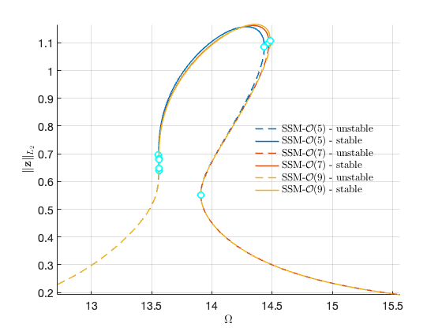 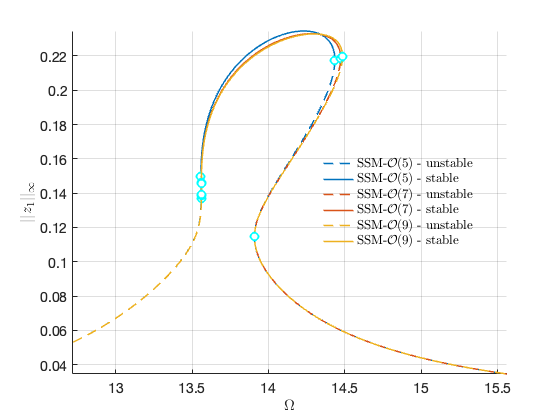 <pre class="codeinput">nCycles = 500;
coco = <a href="../../../Library/Features/Wrappers/cocoWrapper/cocoWrapper.html">cocoWrapper</a>(DS, nCycles, obs);
set(coco.<a href="../../../Library/Features/Options/Options.html">Options</a>, <span class="string">'PtMX'</span>, 1000, <span class="string">'NTST'</span>,10, <span class="string">'dir_name'</span>, <span class="string">'bd_ld_v6'</span>);
set(coco.<a href="../../../Library/Features/Options/Options.html">Options</a>, <span class="string">'NAdapt'</span>, 2, <span class="string">'h_max'</span>, 200, <span class="string">'MaxRes'</span>, 1);
coco.initialGuess = <span class="string">'linear'</span>;
start = tic;
bd_ld = coco.<a href="../../../Library/Features/Wrappers/cocoWrapper/extract_FRC.html">extract_FRC</a>(freqrange);
timings.cocoFRCbd_ld = toc(start)
</pre><pre class="codeoutput">
 Run='bd_ld_v6.FRC0.0045': Continue primary family of periodic orbits.

    STEP   DAMPING               NORMS              COMPUTATION TIMES
  IT SIT     GAMMA     ||d||     ||f||     ||U||   F(x)  DF(x)  SOLVE
   0                          7.58e-02  1.80e+01    0.0    0.0    0.0
   1   1  1.51e-01  1.59e+00  6.44e-02  1.80e+01    0.0    0.0    0.0
   2   1  1.85e-01  1.35e+00  5.24e-02  1.80e+01    0.0    0.1    0.0
   3   1  2.40e-01  1.10e+00  3.99e-02  1.80e+01    0.0    0.1    0.0
   4   1  3.36e-01  8.45e-01  2.65e-02  1.80e+01    0.0    0.1    0.0
   5   1  5.40e-01  5.67e-01  1.22e-02  1.81e+01    0.0    0.1    0.0
   6   1  1.00e+00  2.66e-01  2.29e-04  1.81e+01    0.0    0.1    0.0
   7   1  1.00e+00  6.40e-03  6.41e-08  1.81e+01    0.0    0.1    0.0
   8   1  1.00e+00  1.46e-06  3.34e-15  1.81e+01    0.0    0.2    0.0
   9   1  1.00e+00  6.95e-14  6.13e-16  1.81e+01    0.0    0.2    0.0

 STEP      TIME        ||U||  LABEL  TYPE         omega    po.period          eps         amp1
    0  00:00:00   1.8075e+01      1  EP      1.2720e+01   4.9396e-01   4.5000e-03   5.3138e-02
   10  00:00:02   1.9352e+01      2          1.3451e+01   4.6712e-01   4.5000e-03   1.0482e-01
   20  00:00:03   1.9684e+01      3          1.3537e+01   4.6416e-01   4.5000e-03   1.2334e-01
   30  00:00:05   1.9884e+01      4          1.3551e+01   4.6368e-01   4.5000e-03   1.4270e-01
   31  00:00:06   1.9902e+01      5  TR      1.3551e+01   4.6366e-01   4.5000e-03   1.4469e-01
   40  00:00:07   2.0579e+01      6          1.3593e+01   4.6223e-01   4.5000e-03   1.7731e-01
   50  00:00:08   2.1332e+01      7          1.3763e+01   4.5652e-01   4.5000e-03   2.0804e-01
   60  00:00:10   2.2522e+01      8          1.4026e+01   4.4798e-01   4.5000e-03   2.2800e-01
   70  00:00:12   2.3121e+01      9          1.4292e+01   4.3964e-01   4.5000e-03   2.3520e-01
   80  00:00:14   2.3255e+01     10          1.4458e+01   4.3458e-01   4.5000e-03   2.2926e-01
   86  00:00:16   2.3097e+01     11  SN      1.4482e+01   4.3386e-01   4.5000e-03   2.2093e-01
   86  00:00:16   2.3097e+01     12  FP      1.4482e+01   4.3386e-01   4.5000e-03   2.2093e-01
   90  00:00:16   2.2862e+01     13          1.4462e+01   4.3445e-01   4.5000e-03   2.1042e-01
  100  00:00:18   2.2015e+01     14          1.4302e+01   4.3933e-01   4.5000e-03   1.8060e-01
  110  00:00:20   2.0902e+01     15          1.4035e+01   4.4769e-01   4.5000e-03   1.4253e-01
  120  00:00:21   2.0340e+01     16          1.3919e+01   4.5140e-01   4.5000e-03   1.1929e-01
  125  00:00:23   2.0236e+01     17  FP      1.3914e+01   4.5158e-01   4.5000e-03   1.1393e-01
  125  00:00:23   2.0236e+01     18  SN      1.3914e+01   4.5158e-01   4.5000e-03   1.1393e-01
  130  00:00:24   2.0173e+01     19          1.3934e+01   4.5093e-01   4.5000e-03   1.0379e-01
  140  00:00:25   2.0832e+01     20          1.4644e+01   4.2905e-01   4.5000e-03   5.3473e-02
  147  00:00:26   2.2062e+01     21  EP      1.5562e+01   4.0376e-01   4.5000e-03   3.4510e-02

timings = 

  struct with fields:

    cocoFRCbd_ld: 27.3057

</pre>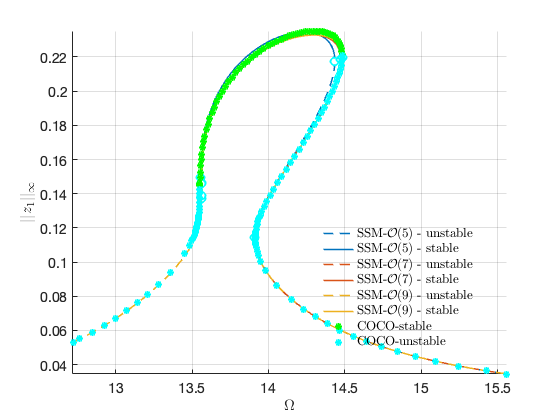 <p><b>Exercises: you are encouraged to reproduce the results shown in [1]. Specifically, please perform the following task</b></p><div><ul><li>Change the value of epsilon and see isola bifurcations</li><li>Continuation of saddle-node bifurcated periodic orbits via SSM_ep2SN</li><li>Continuation of torus bifurcation periodic orbits (which are Hopf fixed points of the ROM) via SSM_ep2HB</li><li>Continuation of two-dimensional tori via SSM_HB2po etcs</li><li>Continuation of infinite period bifurcation points via SSM_po2Tinf</li></ul></div><p class="footer"><br/><a href="https://www.mathworks.com/products/matlab/">Published with MATLAB® R2023a</a><br/></p></div><!--
##### SOURCE BEGIN #####
%% Non-Stationary Pipe Conveying Fluid
%
%%
% In this demo, we set the flow velocity to be 6, where the pipe system is under 
% flutter. We construct a 2D unstable SSM around the unstable straight configuration. 
% We expect there exists a stable limit cycle on the SSM. Under the addition of 
% base harmonic excitation, the stable limit cycle is perturbed as stable torus. 
% We are interested in the persistence of the torus under the change of excitation 
% frquency and amplitude. More details can be found in [1]
% 
% [1] M. Li, H. Yan, L. Wang: Nonlinear model reduction for a cantilevered pipe 
% conveying fluid: A system with asymmetric damping and stiffness matrices. MSSP. 
% 2023. https://doi.org/10.1016/j.ymssp.2022.109993

clearvars
close all
%% Example setup
% The $N$-degree of freedom dynamical system is of the form
% 
% $$\mathbf{M\ddot{q}} + \mathbf{C\dot{q}} + \mathbf{Kq} + \mathbf{f}(\mathbf{q},\mathbf{\dot{q}}) 
% = \mathbf{0}$$
% 
% where $\mathbf{f}=\mathcal{O}(|\mathbf{q}|^2,|\mathbf{\dot{q}}|^2,|\mathbf{q}||\mathbf{\dot{q}}|)$ 
% represents the nonlinearities and $\mathbf{M}$, $\mathbf{C}$, and $\mathbf{K}$ 
% are the $n\times n$ mass, stiffness, and damping matrices, respectively.
% 
% We rewrite the system in first-order form as
% 
% $$\mathbf{\dot{x}} = \mathbf{A}\mathbf{x} + \mathbf{G}(\mathbf{x}) = \mathbf{F}(\mathbf{x})$$
% 
% with
% 
% $\mathbf{x}=\left[\begin{array}{c}\mathbf{q}\\\dot{\mathbf{q}}\end{array}\right],\quad\mathbf{A}=\left[\begin{array}{cc}\mathbf{0}  
% & \mathbf{I}\\-\mathbf{M}^{-1}\mathbf{K} & -\mathbf{M}^{-1}\mathbf{C} \end{array}\right],\quad\mathbf{G}(\mathbf{x})=\left[\begin{array}{c}  
% \mathbf{0} \\ -\mathbf{M}^{-1}\mathbf{f}(\mathbf{x})\end{array}\right]$.

clear all;
nmodes = 4;
fcload = 1;
flowspeed = 6;
miu = 0;
Gamma=0;
alpha=0.001;
beta=0.2;
[M, C, K, fnl, fext] = build_model(nmodes,flowspeed,beta,miu,Gamma,alpha,'clamped-free','nonlinear_damp');
n = size(M,1);    % mechanical dofs (axial def, transverse def, angle)
[F, lambda] = functionFromTensors(M, C, K, fnl);
lambda = sort(lambda);
%% Create dynamical system 

DS = <a href="../../../Library/DynamicalSystem/DynamicalSystem.html">DynamicalSystem</a>();
set(DS,'M',M,'C',C,'K',K,'fnl',fnl);
set(DS.<a href="../../../Library/Features/Options/Options.html">Options</a>,'Emax',10,'Nmax',10,'notation','multiindex')
set(DS.<a href="../../../Library/Features/Options/Options.html">Options</a>,'RayleighDamping',false)
[V,D,W] = DS.<a href="../../../Library/DynamicalSystem/linear_spectral_analysis.html">linear_spectral_analysis</a>();
%% 
% *Choose Master subspace* (perform resonance analysis)
% 
% We take the pair of unstable modes as the master subspace and compute the 
% corresponding 2D unstable SSM

S = SSM(DS);
set(S.<a href="../../../Library/Features/Options/Options.html">Options</a>, 'reltol', 1,'notation','multiindex');
order = 9;
resonant_modes = [1,2]; 
S.<a href="../../../Library/Manifold/choose_E.html">choose_E</a>(resonant_modes);
[W0,R0] = S.<a href="../../../Library/Manifold/compute_whisker.html">compute_whisker</a>(order);
%%
% *Reduced dynamics in symbolic form*
lamdMaster = DS.spectrum.Lambda(resonant_modes);
options = struct();
options.isauto = true; 
options.isdamped = true;
options.numDigits = 4;
y = <a href="../../../Library/Features/misc/reduced_dynamics_symbolic.html">reduced_dynamics_symbolic</a>(lamdMaster,R0,options)
%% 
% Prediction of the emergence of isola

<a href="../../../Library/Features/misc/plot_analytical_domain.html">plot_analytical_domain</a>(order,R0)
xlim([0.84 0.88]); ylim([-0.01 0.01])
%% 
% we indeed see a converged root, which indicates that the system has isola 
% under the addition of forcing. In addition, cubic approximation presents analytical 
% prediction of the critical value of forcing amplitude for the merging of main 
% and isola branches.

lamdM = lamdMaster(1);
gamma1 = R0(3).coeffs(1,2);
arho = sqrt(4*real(lamdM)^3/27/abs(real(gamma1)));
brho = imag(lamdM)+imag(gamma1)*real(lamdM)/3/abs(real(gamma1));
f = abs(W(1:n,1)'*fext*0.5);
epsc = arho/brho^2/f
%% Convergence of backbone curve

syms rho_1 positive
[coeffs,powers]=coeffs(y(2));
tmp = simplify(log(powers));
exp_idx = double(tmp./log(rho_1));
%%
rhosamp = 0:0.01:1.0;
orders = [3 5 7 9];
<a href="../../../Library/Features/misc/plot_backbone_curves.html">plot_backbone_curves</a>(double(coeffs),exp_idx,rhosamp,orders)
%%
phiend = zeros(n,1);
lamda  = zeros(n,1);
lamda(1)=1.8751040687119611664453082410782141625701117335311;
lamda(2)=4.6940911329741745764363917780198120493898967375458;
lamda(3)=7.8547574382376125648610085827645704578485419292300;
lamda(4)=10.995540734875466990667349107854702939612972774652;
lamda(5)=14.137168391046470580917046812551772068603076792975;
lamda(6)=17.278759532088236333543928414375822085934519635550;
lamda(7)=20.420352251041250994415811947947837046137288894544;
lamda(8)=23.561944901806443501520253240198075517031265990051;
for k=1:n
   x    = 1;
   phin = cos(lamda(k)*x)-cosh(lamda(k)*x)-(cos(lamda(k))+cosh(lamda(k)))/(sin(lamda(k))+sinh(lamda(k)))*...
        (sin(lamda(k)*x)-sinh(lamda(k)*x));%clamped-free
   phiend(k) = phin;
end
% disp at the free end
obsfun = @(x,mapx,nmodes) mapx*x(1:nmodes,:);
obs = @(x) obsfun(x,phiend',n);
%%
%  backbone curve in physical coordiantes
set(S.<a href="../../../Library/Features/Options/Options.html">FRCOptions</a>, 'outdof',obs);
rhomax = 1;
freqrange = [0.94 1.15]*imag(D(1));
BB = S.<a href="../../../Library/Features/Wrappers/cocoWrapper/extract_backbone.html">extract_backbone</a>(resonant_modes, freqrange, [3 5 7 9],rhomax);
%% Transient response prediction

tf = 15;
nsteps = 3000;
z0    = 0.0*V(:,1); % initial condition (here we select it based on the modal shapes)
z0(1) = 0.001;
outdof = [1:n n+1];
traj = <a href="../../../Library/Features/misc/transient_traj_on_auto_ssm.html">transient_traj_on_auto_ssm</a>(DS, resonant_modes, W0, R0, tf, nsteps, outdof, z0);
[tInt,zInt] = <a href="../../../Library/Features/Wrappers/time_integration_transient.html">time_integration_transient</a>(DS,0,...
    'nSteps', nsteps, 'nCycles', ceil(tf/2/pi), ...
    'integrationMethod','ode45','outdof',outdof,'init',z0);
figure;
plot(traj.time,traj.phy(:,1:n)*phiend,'r-','LineWidth',1); hold on
plot(tInt,zInt(:,1:n)*phiend,'bREPLACE_WITH_DASH_DASH','LineWidth',1);
xlabel('$\tau$','Interpreter',"latex",'FontSize',14);
ylabel('$w$','Interpreter',"latex",'FontSize',14);
set(gca,'FontSize',14); grid on
legend('SSM','Full')
xlim([0,min(traj.time(end),tInt(end))]);

rhosamp = [0:0.01:0.9];
plotdofs = [1 2 n+1];
<a href="../../../Library/Features/misc/plot_2D_auto_SSM.html">plot_2D_auto_SSM</a>(W0,rhosamp,outdof(plotdofs));
view([30 30])
hold on
plot3(traj.phy(:,plotdofs(1)),traj.phy(:,plotdofs(2)),traj.phy(:,plotdofs(3)),'r-');
plot3(zInt(:,plotdofs(1)),zInt(:,plotdofs(2)),zInt(:,plotdofs(3)),'bREPLACE_WITH_DASH_DASH');
%% Forced response - periodic orbit

% add Forcing
kappas = [-1; 1];
coeffs = [fext fext]/2;
epsilon = 0.0045;
DS.<a href="../../../Library/DynamicalSystem/add_forcing.html">add_forcing</a>(coeffs, kappas, epsilon);
set(DS.<a href="../../../Library/Features/Options/Options.html">Options</a>,'BaseExcitation',true);
%%
% set up FRC options
set(S.<a href="../../../Library/Features/Options/Options.html">FRCOptions</a>, 'nCycle',500, 'initialSolver', 'fsolve');
set(S.contOptions, 'PtMX', 300, 'h_max', 0.1);
set(S.<a href="../../../Library/Features/Options/Options.html">FRCOptions</a>, 'omegaSampStyle', 'cocoBD');
set(S.<a href="../../../Library/Features/Options/Options.html">FRCOptions</a>, 'outdof',obs,'method','continuation ep','p0',[]);
S.<a href="../../../Library/Features/Wrappers/cocoWrapper/extract_FRC.html">extract_FRC</a>('freq',freqrange,[5,7,9]);
%%
nCycles = 500;
coco = <a href="../../../Library/Features/Wrappers/cocoWrapper/cocoWrapper.html">cocoWrapper</a>(DS, nCycles, obs);
set(coco.<a href="../../../Library/Features/Options/Options.html">Options</a>, 'PtMX', 1000, 'NTST',10, 'dir_name', 'bd_ld_v6');
set(coco.<a href="../../../Library/Features/Options/Options.html">Options</a>, 'NAdapt', 2, 'h_max', 200, 'MaxRes', 1);
coco.initialGuess = 'linear';
start = tic;
bd_ld = coco.<a href="../../../Library/Features/Wrappers/cocoWrapper/extract_FRC.html">extract_FRC</a>(freqrange);
timings.cocoFRCbd_ld = toc(start)
%% 
% *Exercises: you are encouraged to reproduce the results shown in [1]. Specifically, 
% please perform the following task*
%% 
% * Change the value of epsilon and see isola bifurcations
% * Continuation of saddle-node bifurcated periodic orbits via SSM_ep2SN
% * Continuation of torus bifurcation periodic orbits (which are Hopf fixed 
% points of the ROM) via SSM_ep2HB
% * Continuation of two-dimensional tori via SSM_HB2po etcs
% * Continuation of infinite period bifurcation points via SSM_po2Tinf
##### SOURCE END #####
--></body></html>